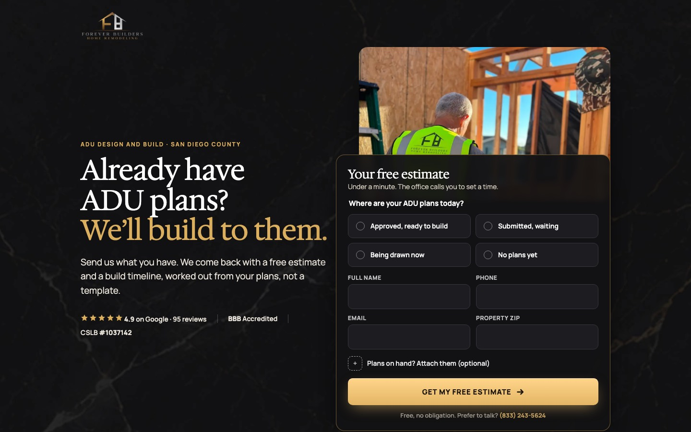
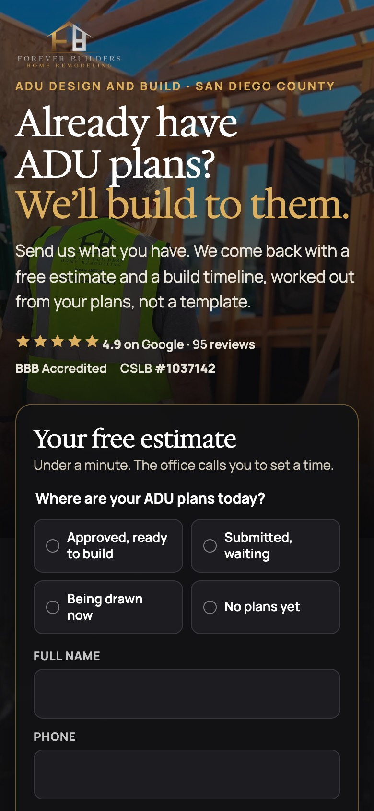
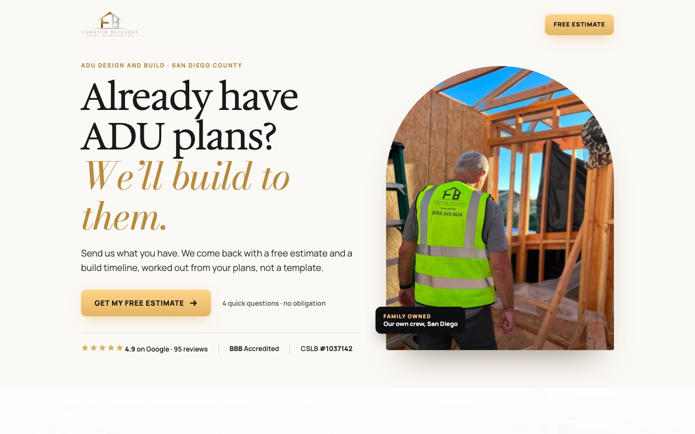
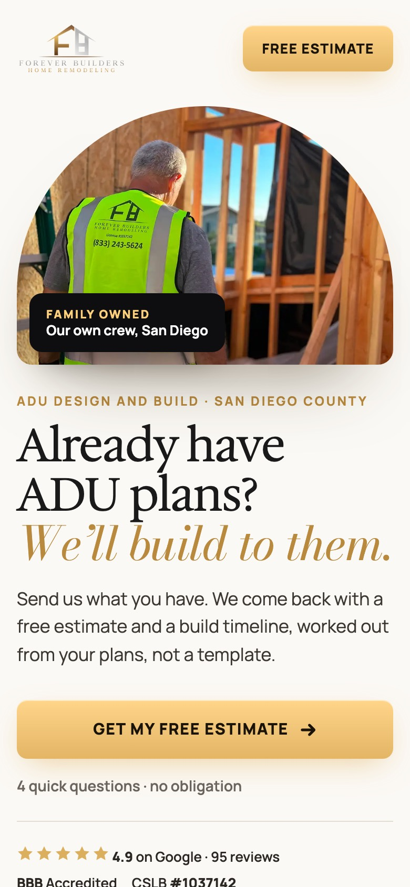
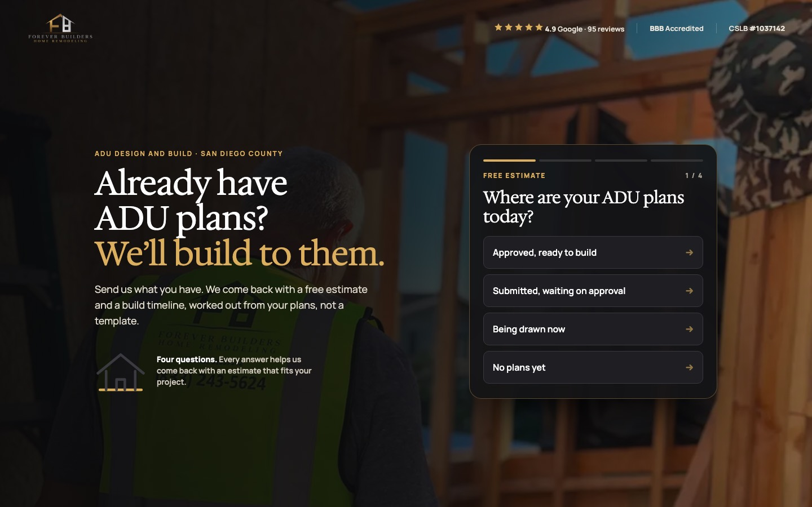
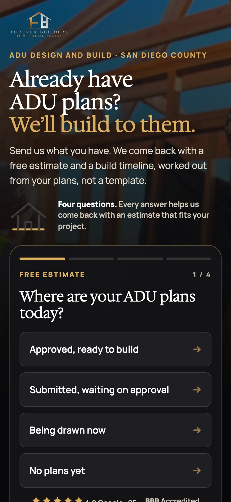
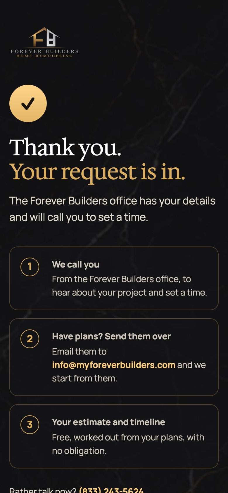

קמפיינים 1 ו-13. אותו דף, והכותרת והתמונה מתחלפות לפי ?c=. כל הלינקים פותחים את הדף במסך מלא. הטופס לא שולח לשום מקום, רק מדפיס לקונסול ועובר לדף התודה.
כהה עם זהב, השפה של הדפים שלהם, ברמה גבוהה יותר. הטופס כבר בראש הדף. בגלילה, שרטוט של ADU נמתח בזהב, הופך לשלד עץ אמיתי מהאתר שלהם, ואז לחלל גמור.


בהיר, שיש לבן ואיטליק בסגנון Didot של האתר הראשי. הרגע המרכזי: דף הערכה עם הלוגו שלהם, והשורות שלו מתמלאות בגלילה (בדיקת התוכניות, פירוט, הערכה, לוח זמנים), בלי אף מחיר. הטופס בסוף, באזור כהה. זה שיא הדף.


כמו אפליקציה. בטלפון, השאלה הראשונה כבר במסך הראשון, עם כפתורים גדולים. עם כל תשובה הבית מהלוגו שלהם נבנה: יסוד, קירות, גג ודלת. מתחת לשאלון: פס תמונות אמיתיות מאתרי העבודה (מחליקים הצידה), העבודות, הביקורות והבעלים.


